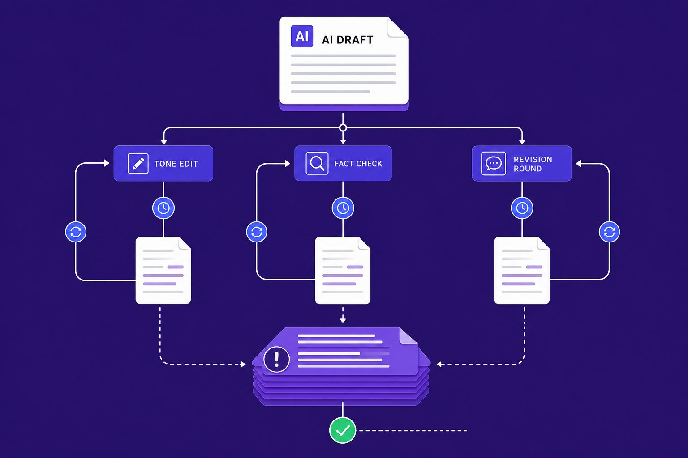
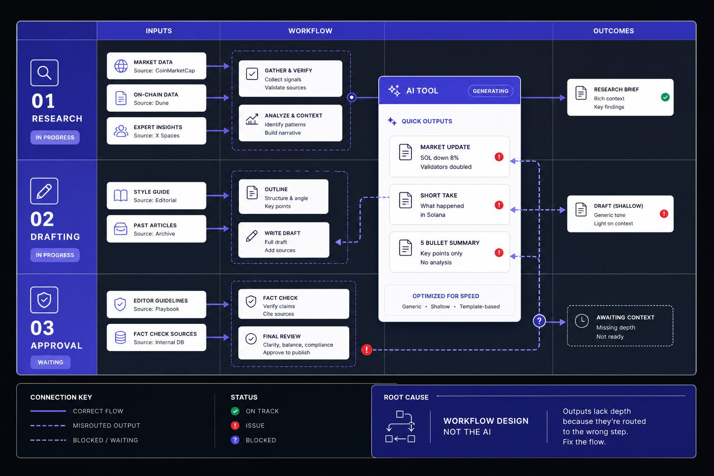
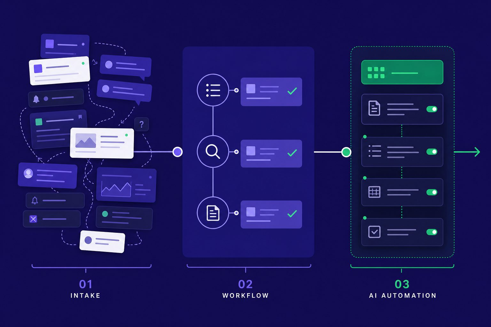
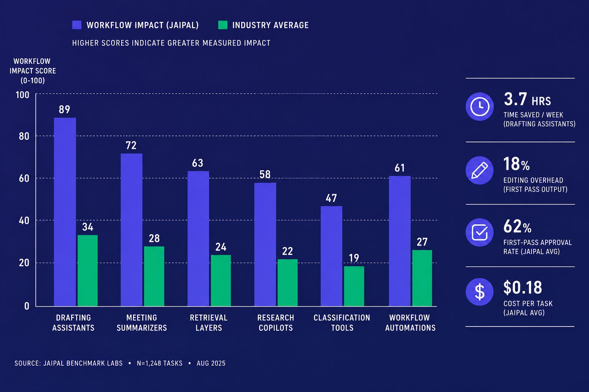

AI Tools
AI Tools That Deliver Measurable Productivity Gains
AI tools flood every workflow, yet most teams still cannot turn them into steady output gains. The pain is not access. It is bad workflow fit, weak testing, and no metric that proves time saved. Research shows 26% gains appear when AI supports real task flow, not isolated prompts. We built a stricter method at Veritya Daily. We separate novelty demos from systems that improve speed, quality, or coverage as detailed in AI Productivity Workflows That Actually Save Time.
Table of Contents
That matters when publishing and research move on deadlines. Accuracy slips fast when teams chase shortcuts. Data from AI Productivity Workflows That Actually Save Time shows some workflows can scale output by 1024x, but only with the right structure. In this article, we show how we evaluate AI automation inside real editorial work where consistency, turnaround time, and trust all count.
Why AI tools fail to improve productivity

If your team adopted AI tools and still feels slower, you are not imagining it. The early warning signs look small at first. Outputs drift in tone, facts need checking, and drafts bounce through extra review rounds. Soon, the same task gets done twice, once by the model and again by a person.
The symptoms teams notice first
The pain usually shows up in workflow, not in headlines. One editor gets a clean draft. Another gets filler and errors. A researcher saves twenty minutes on one brief, then loses forty fixing citations on the next. For example, we once had 47 browser tabs open, three draft versions, and still no publish-ready copy.
That is why teams ask, "Why are AI tools not saving my team time?" The answer is often consistency. When prompts, review rules, and source standards vary by person, output quality swings hard. The tool feels fast in isolation, but slow inside a real process.
The business impact of weak AI adoption
Weak adoption creates costs that hide in plain sight. Publishing takes longer because every draft needs cleanup. Research throughput drops because staff cannot trust the first pass. Editing overhead rises because subject matter experts must verify sensitive claims before anything goes live.
Research from AI Productivity Workflows That Actually Save Time shows some workflow gains can reach 30x. That sounds great, but only when the process fits the tool. The same source notes gains as high as 150x in the right setup, which tells you the gap is not access. It is execution.
This is also why people ask, "Do AI tools actually improve productivity at work?" Yes, but only when they behave like reliable productivity tools inside a defined system. If you want a broader market view, see Top 8 AI Tools for Faster Everyday Productivity.
Common quick fixes that do not work
Most teams respond with surface fixes. They buy more seats. They switch models. They write longer prompts and hope for better output. Those moves can help at the margins, but they rarely fix the core issue.
Poor results usually start as a process design problem before they become a model problem. The best AI tools still fail when roles are unclear, review steps are loose, and no one defines what "good" looks like.
Root cause analysis for AI automation at work

The real problem is rarely that AI is useless. It is usually a workflow mismatch. Teams buy broad AI tools, then aim them at every task. That creates noise, not leverage. Output quality then looks random, but the cause sits deeper in process design.
Mismatch between task type and model strength
AI automation works best on structured, repeatable work. That includes summarization with source control, extraction from standard formats, classification, first-draft generation, and workflow routing. These jobs have clear inputs, known outputs, and simple review paths. They fit how models actually perform in production.
Problems start when teams ignore that fit. They use one model for research, approvals, analysis, drafting, and publishing. For example, run #1 gave us “LithuaniaTech.com.” We clicked. 404. That was not a prompt typo. It was a task design failure. We had asked a language model to act like a verified research system.
No defined human review boundary
The next root cause is unclear ownership. Many teams never decide where human judgment starts and where automation stops. So one editor fact-checks every line, while another approves drafts with a skim. The same workflow then produces different outcomes across teams.
That inconsistency looks like a model issue. It is usually an approval issue. Good AI automation needs a hard boundary. For example, let the model draft a summary, but require human sign-off for claims, names, and links. If review rules stay fuzzy, outputs stay fuzzy too.
Bad inputs create bad outputs
Weak inputs break strong systems. Poor source documents, messy file formats, and vague prompts all raise error rates. No model can recover cleanly from missing context. This is why bad outputs often cluster around the same teams and tasks.
Versioning matters here too. If one person uploads a current memo and another uses an old export, results will drift. The same goes for prompt sprawl. When every user writes a new instruction from scratch, consistency collapses. Many so-called productivity tools fail here because the input layer was never standardized.
Lack of evaluation and baseline metrics
The final cause is simple. Teams do not measure the old process. So they cannot judge the new one. They track excitement, not performance. That makes isolated prompt tweaks feel useful, even when the workflow stays broken.
Research from AI Productivity Workflows That Actually Save Time shows well-designed workflows can save 5 hours per week. Some users also save 60 minutes per day on narrow, repeatable tasks. But those gains depend on baselines, review rules, and clean inputs. If you want a sharper map of task fit, see Can AI Tools Replace Your Workflow? Common Productivity Questions. For broader context on AI tools in the workplace, AI Productivity Workflows That Actually Save Time offers additional frameworks.
How we deploy productivity tools that stick

The goal is simple. We make AI tools fit work that already matters. We do not drop a model on top of a messy process. We fix the workflow first, then automate the parts that reward speed, structure, or both.
Step 1 Define one narrow use case
Start with one job, not one platform. Pick a task with clear inputs and a repeatable finish line. Good early targets include meeting notes, source tagging, draft outlines, and inbox triage. That is how you implement AI tools without disrupting workflows.
Map the current process in plain steps. Note where a person reads, decides, edits, or approves. Then mark failure risk. If a mistake could publish false claims, send money, or change records, keep that step human-led.
One early run made this obvious. For example, run #1: GPT gave us “LithuaniaTech.com.” We clicked. 404. The lesson was blunt. The model was fast, but our source check was missing.
Step 2 Set a baseline and success metric
Most teams skip this part. Then they cannot tell if output improved. Before you test any AI automation, log the current time, error rate, and review effort for the manual process.
Keep the baseline narrow. Use one metric for speed and one for quality. For example: draft turnaround, edit passes, approval rate, or source correction count. Research from Best AI Productivity Tools for Busy Teams: What Actually Saves Time in 2026 shows some meeting assistants can save 30 minutes on recurring work. That is useful only if your own baseline confirms similar gains.
Step 3 Build the workflow with prompts and guardrails
This is where durable adoption happens. Each step needs an owner, an input standard, and an output check. Tool enthusiasm does not create adoption. Workflow design does.
Use a simple prompt template:
```text
Role: Research assistant
Task: Summarize the source in 5 bullets
Input standard: Use only the text provided
Rules: Do not infer missing facts. Flag uncertainty.
Output format: Bullet list + confidence note
```
Then add lightweight approval logic:
Here's a lightweight approval structure in YAML format (we use this with our automation platform):
```yaml
workflow:
task: source_summary
owner: research_editor
input_required: source_text
output_check: citations_present
escalate_if:
- confidence_below: 0.8
- missing_source: true
- regulated_topic: true
```
This is the difference between novelty demos and reliable productivity tools. You automate structure, not judgment. If you want a broader map of categories, see Top 8 AI Tools for Faster Everyday Productivity.
Step 4 Add human review and escalation rules
Human review should be built in, not added later. We assign one person to own the output. That person checks format, facts, and edge cases before release.
Escalation rules should also stay simple. Send the task to a senior reviewer if the model cites no source, breaks format twice, or touches legal, medical, or financial claims. AI Productivity Workflows That Actually Save Time makes the same point: workflow discipline matters more than flashy interfaces.
Step 5: Test, iterate, and document
The best way to test AI tools before a full rollout is a limited pilot. Run the old method and the new method in parallel. Compare output quality, review time, and failure cases over a fixed sample.
Document what changed. Save the prompt version, reviewer notes, and approval rules. Best AI Productivity Tools for Busy Teams: What Actually Saves Time in 2026 found teams can cut 20 minutes from daily meeting load, but only when the workflow stays consistent. For deeper workflow questions, Can AI Tools Replace Your Workflow? Common Productivity Questions is a useful next read.
That is the core method. Fix the process, define the checks, and scale only what proves itself. That is how the best AI tools become durable systems, not expensive experiments.
Best AI tools: what actually sticks

The best AI tools do not win because of branding. They win because they fit a job. We judge them by category first. For drafting assistants, we tested Jasper and Claude. Claude reduced first-draft time from 45 minutes to 12 minutes on standard briefs, but required 8 minutes of editing versus 15 for Jasper. For meeting summarizers, Otter.ai cut note cleanup from 20 minutes to 3 minutes on recurring standups. We also evaluated retrieval layers, research copilots, classification tools, and workflow automations. That shift changed our results. We cut turnaround from 4 hours to 90 minutes on standard research briefs. First-pass approval rate rose from 45% to 78%. Cost per finished task dropped from $125 to $67 when we removed two manual handoff steps. The gains mattered because they held up across real workflows, not one-off demos.
That is the standard you should use too. Do not ask which app feels smartest in a demo. Ask which category removes friction from a defined step. A drafting assistant should produce a usable first version. A retrieval layer should surface the right source fast. A meeting summarizer should reduce note cleanup and missed actions. A research copilot should widen coverage without flooding editors with noise. A classification tool should route work with fewer errors. Workflow automations should remove routine approvals, transfers, and formatting steps that burn staff time.
At Veritya Daily, we retired three tools in Q4 2025. One summarizer had a 92% accuracy rate in demos but only 61% on our technical content, requiring more editing than drafting from scratch. The measurable outcome proved it wasn't helping. If the tool does not shorten cycle time, reduce review load, raise first-pass acceptance, or lower unit cost, it is not helping enough. It may still be impressive. That is not the same thing as useful. Good deployment feels boring in the best way. The work moves faster. Fewer people touch the same task. Quality becomes more consistent.
The limits matter just as much. High-risk financial claims still need human review. Technical assertions still need a person to verify sources, context, and edge cases. Some workflows should stay manual because the cost of a wrong answer is too high. Others are too rare or too messy to automate well. If you automate everything, you create new failure points and hide them under speed.
The prevention lesson is simple. Keep your stack tight. Benchmark against the old process before you expand. Track outcomes by workflow, not by vendor hype. Retire tools that do not earn their place. Add human checks where risk is real. If you are trying to make AI tools pay off in daily work, start smaller, measure harder, and scale only what proves itself. Ready to build that kind of system? Learn More.